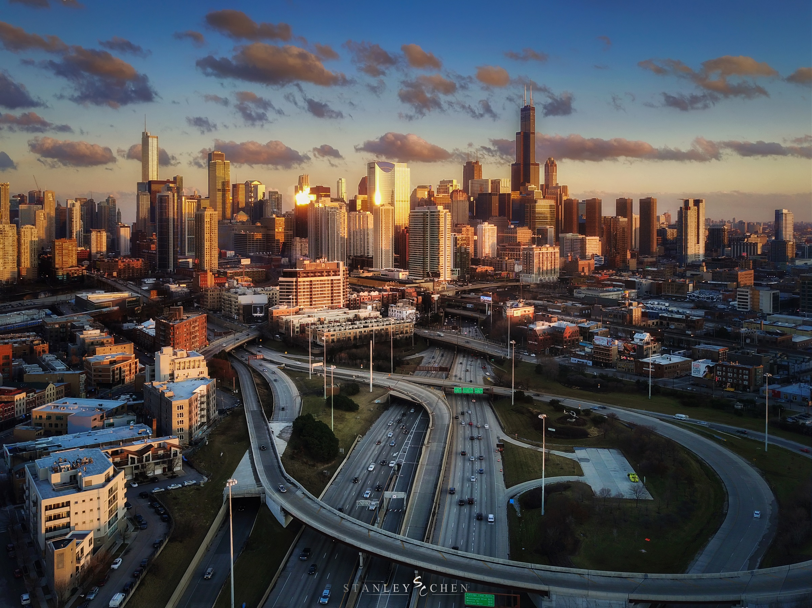

原来命中注定的那台相机，叫做权志龙同款。
在这个相机越来越自动化的年代，不知道多少人还记得或者还能回忆的起来阳光16法则：
艳阳16阴天8
多云11日暮4
阴云压顶5.6
雨天落日同日暮
1. 尼康D800，我审美偏执的罪恶根源
尼康D800陪伴了我四年多，依然是我最好的伙伴（仅限工作关系并无更多交流），和主要使用的相机，但是对它的感情似乎只能停留在一个可信赖的工具，体积和我对于它的使用习惯决定了我在使用它的时候带有极强的目的性: 追求完美的构图，保证最好的画质，只拍摄计划之内的东西。我曾经不止一次在各类公开课或者照片描述中强调三脚架构图的严谨和重要性，那一大背包的器材伴随我去露营徒步走到最后的终点，就是为了那样的时刻，那些在我的剧本里已经预设好的东西。
(加州猛犸山的星空，当然查好了天气，查好了银河出现的时间位置，by Nikon D800)
在玻利维亚实习时候一起出门旅行的以色列小伙伴随身带着一台索尼Alpha7，他对于野生动物痴迷，一起出去的时候带我认识了不少新物种。每次他觉得好看的东西他都会随手拍下，反观背着一大书包器材的我却常常无动于衷，因为我早就想好了去每个地方要拍的是什么，要等的是什么时刻。

（前几天用无人机拍摄的芝加哥，从来没有见到过的视角，无人机拍摄的时候虽然更多乐趣，但是还是没法放下负担。by DJI Mavic Pro）
2. 数码时代更别忘了我们拍胶片时曾经拥有的耐心
曾经考虑过很多很多数码的便携相机，但是每次觉得要买的时候仔细一想觉得画质不如D800，购买的前一刻总觉得买来这些相机最终的宿命也是打入冷宫于是每每只能放弃。高速连拍越来越快，细节越来越丰富，高感光成像越来越好。数码相机好像离他作为一个（严肃意义的）摄影媒介越来越远，离一台功能性的电子机械越来越近。人们在胶片时代那种因为无法预知胶片成像，珍惜每卷只有36张，16张甚至只有1张的底片，在数码时代不会再有了。现在回看那些充满情怀（zhuang B）的设备，从一代经典的胶片单反尼康FM2或者佳能AE1，腰间取景的禄来或者玛米亚双反，到要按照部件组装无法手持的林浩夫，ALPA等中画幅或者大画幅专业机。上卷，慎重的测光，调整曝光，估距，慢慢的对焦，屏气按下快门的整个过程，因为没有即时预览而怀揣着不确定的拍摄者，对待每一个步骤的用心和所用到的知识，都不是现在的所有相机能比的。
人们曾经会从前一次拍摄失败的经历当中（欠曝，模糊）更加理解怎么与光线相处，在反思中变成拍的更好的那个人。而不是像现在一样，拍差了以后在自己电脑的数字暗房（PS）里，给平静的森林加上乱七八糟的柔光，或者在哪座山的后面加上银河让我觉得“ps拼贴这么明显我都不好意思说你们居然还去热捧”。用那些大家觉得第一眼震撼的效果（且5毛）把原本多元化的世界调整成强奸视觉的照片。